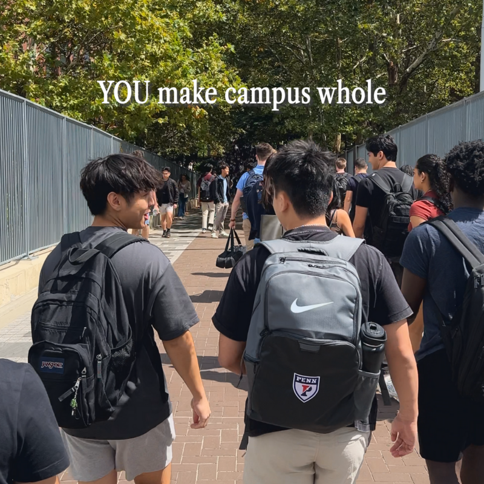

Health & Medicine
Penn Dental on Cedar bridges medicine and dentistry, lightens ER demands
News


Upcoming Events

Special Events
Cores Day 2025
The annual Cores Day event is a joint venture between Penn Vet, the Children’s Hospital of Philadelphia, the Perelman School of Medicine, and the Wistar Institute to showcase the many biomedical research services and resources available at Penn. This program is an opportunity for students, faculty, and staff to learn about research core facilities across the University and speak with core facility personnel. Register to attend.

Talks
Record Borrowing Amid Budget Strains
Organized by the Penn Institute for Urban Research, this expert panel—moderated by William Glasgall, Penn IUR Fellow and Volcker Alliance Public Finance Advisor, and Susan Wachter, co-director of Penn IUR and Wharton professor—will address the unparalleled boom in state and local borrowing in the face of federal spending cuts and pressure on budgets. Register to attend.

Federal Government Updates
Penn is closely monitoring federal policy changes affecting institutions of higher education and academic health systems.
Title IX Compliance in Athletics
Penn's Title IX Resolution with the U.S. Department of Education Office for Civil Rights
Penn Priorities
A look at a few of our big picture priorities that improve Penn as we create knowledge to benefit the world.

Stay Connected

Sheerr Pool at the Pottruck Center reopened this summer after a yearlong renovation. The new features and improvements have made the pool safer and more accessible. Swim lessons and other programming have now returned with the fall semester.
When Little Dove sat down mid-walk, her owner, Elizabeth Mauldin, a dermatopathologist at @PennVetSchool, knew something was off. What followed was a swift, coordinated response from a veterinary team whose skill and care gave the rescue dog a second chance.

 @UOFPENN
@UOFPENN
Good to have you all back.
Equal Opportunity and Nondiscrimination at Penn
The University of Pennsylvania seeks talented students, faculty, and staff with a wide variety of backgrounds, experiences, and perspectives. The University of Pennsylvania does not discriminate on the basis of race, color, sex, sexual orientation, religion, creed, national origin (including shared ancestry or ethnic characteristics), citizenship status, age, disability, veteran status or any other class protected under applicable federal, state, or local law in the administration of its admissions, financial aid, educational or athletic programs, or other University-administered programs or in its employment practices. Questions or complaints regarding this policy should be directed to the executive director of the Office of Equal Opportunity Programs; Franklin Building, 3451 Walnut Street, Suite 421, Philadelphia, PA 19104-6106; or (215) 898-6993.